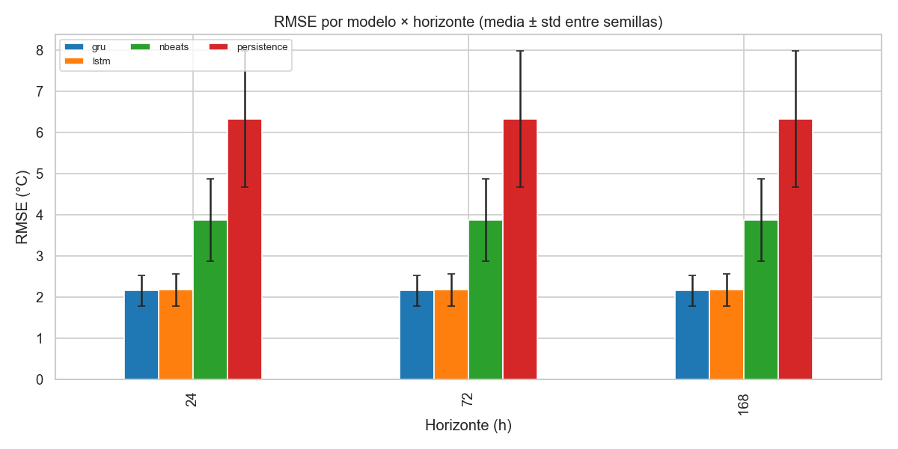
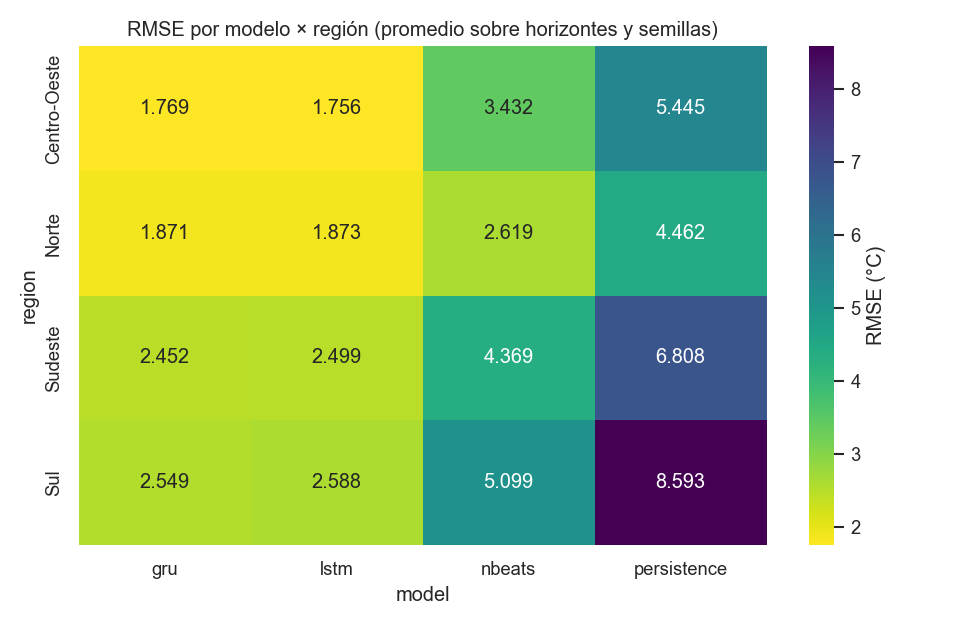
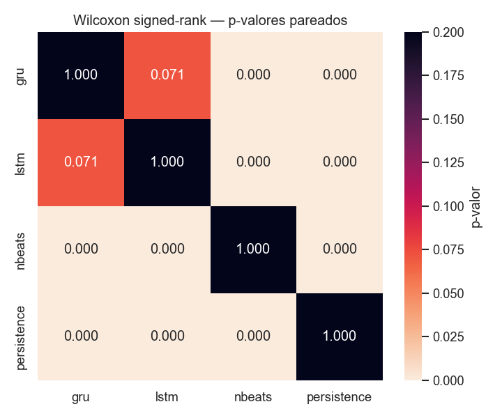
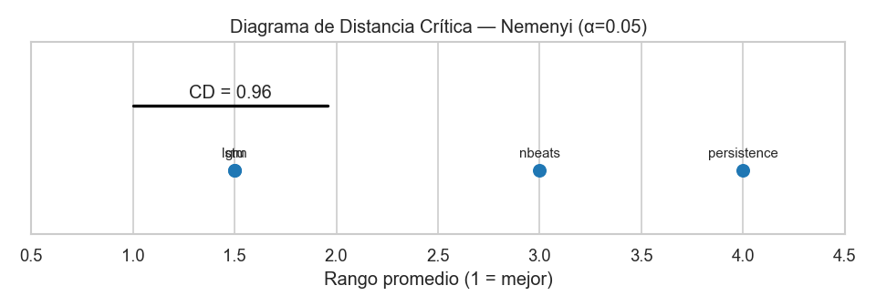
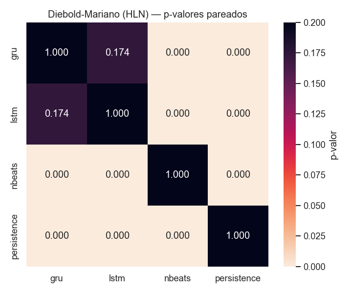
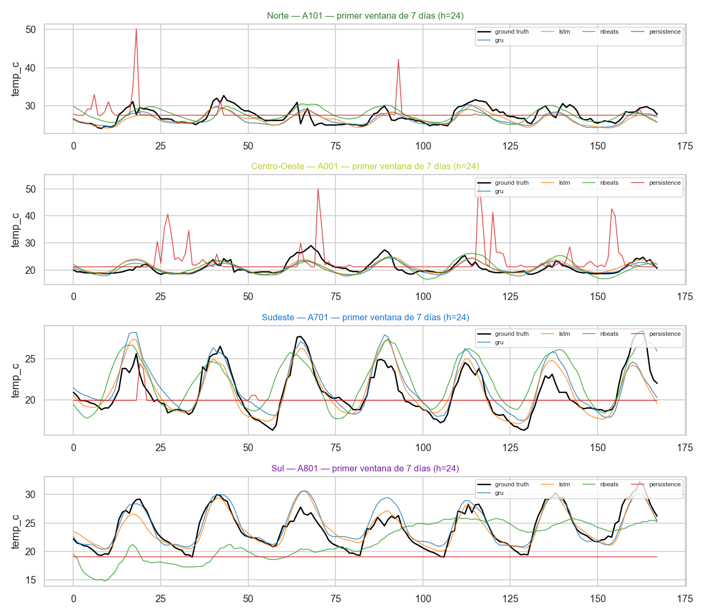
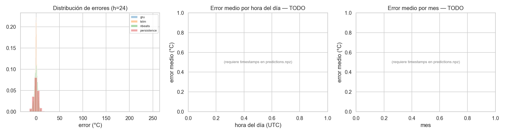

Benchmark Final: Comparación Estadística de Modelos de Forecasting#
Muestreo Provisional
from __future__ import annotations
import json
import os
import sys
from itertools import combinations
from pathlib import Path
import numpy as np
import pandas as pd
import yaml
# Resolución robusta de la raíz del repo (notebook puede estar en /notebooks)
REPO_ROOT = Path.cwd().resolve()
while not (REPO_ROOT / "config" / "config.yaml").exists() and REPO_ROOT != REPO_ROOT.parent:
REPO_ROOT = REPO_ROOT.parent
sys.path.insert(0, str(REPO_ROOT))
os.chdir(REPO_ROOT)
CONFIG = yaml.safe_load((REPO_ROOT / "config" / "config.yaml").read_text(encoding="utf-8"))
SAMPLING = CONFIG.get("sampling", {}) or {}
SAMPLING_ON = bool(SAMPLING.get("enabled", False))
if SAMPLING_ON:
print("⚠️ MUESTREO PROVISIONAL ACTIVO — los resultados NO son finales.")
print(f" n_stations_per_region: {SAMPLING.get('n_stations_per_region')}")
print(f" train_years : {SAMPLING.get('train_years')}")
print(f" max_epochs_override : {SAMPLING.get('max_epochs_override')}")
print(f" n_seeds_override : {SAMPLING.get('n_seeds_override')}")
else:
print("✅ Configuración completa (sin muestreo). Resultados oficiales.")
⚠️ MUESTREO PROVISIONAL ACTIVO — los resultados NO son finales.
n_stations_per_region: 1
train_years : [2022, 2023]
max_epochs_override : 5
n_seeds_override : 2
Configuración global, paths e imports#
import warnings
warnings.filterwarnings("ignore", category=FutureWarning)
import matplotlib.pyplot as plt
import seaborn as sns
from IPython.display import Image, display
from src.utils.regions import (
all_regions, region_color, region_color_map,
region_of, stations_by_region,
)
from src.benchmark.stats_tests import (
diebold_mariano,
friedman_with_posthoc,
wilcoxon_pairs,
ljung_box,
bds_test,
bootstrap_ci,
nemenyi_critical_difference,
average_ranks,
shapiro_per_model,
)
EXP_DIR = REPO_ROOT / CONFIG["paths"]["experiments"]
FIG_DIR = REPO_ROOT / CONFIG["paths"]["figures"] / "benchmark_final"
TAB_DIR = REPO_ROOT / CONFIG["paths"]["tables"] / "benchmark_final"
STATS_DIR = REPO_ROOT / CONFIG["paths"]["stats"]
for d in (FIG_DIR, TAB_DIR, STATS_DIR):
d.mkdir(parents=True, exist_ok=True)
DEFAULT_MODELS = ["persistence", "lstm", "gru", "nbeats", "tft", "informer"]
DEFAULT_HORIZONS = [24, 72, 168]
ALPHA = 0.05 # nivel de significancia declarado
N_BOOT = 1000 # bootstrap percentil
RNG_SEED = 42
sns.set_context("notebook")
sns.set_style("whitegrid")
def show_saved_figure(path: Path | None) -> None:
if path is None:
return
display(Image(filename=str(path)))
print(path)
1. Comparación Tabular#
1.1 Carga de resultados desde experiments/#
def _seed_dirs(model: str) -> list[Path]:
base = EXP_DIR / model
if not base.exists():
return []
return sorted(p for st in base.iterdir() if st.is_dir()
for p in st.iterdir()
if p.is_dir() and p.name.startswith("seed="))
def load_predictions_long() -> pd.DataFrame:
"""Devuelve un DataFrame largo: una fila por (modelo, station, seed, horizonte).
Columnas: model, station, region, seed, horizon, y_true, y_pred (vectores 1D).
Si no hay runs todavía, devuelve un DataFrame vacío y un mensaje claro.
"""
rows = []
target_h = CONFIG["task"]["horizon"]
for model in DEFAULT_MODELS:
for sd in _seed_dirs(model):
station = sd.parent.name
seed = int(sd.name.split("=", 1)[1])
try:
npz = np.load(sd / "predictions.npz", allow_pickle=True)
except FileNotFoundError:
continue
y_true = npz["y_true"] # (N, H, T)
y_pred = npz["y_pred"]
if y_true.ndim == 2:
y_true = y_true[:, :, None]
y_pred = y_pred[:, :, None]
try:
region = region_of(station)
except KeyError:
region = "desconocida"
for h_step in DEFAULT_HORIZONS:
# h_step es paso de horizonte (1..target_h). Si target_h<h_step,
# tomamos el último paso disponible.
idx = min(h_step, y_true.shape[1]) - 1
rows.append({
"model": model, "station": station, "region": region,
"seed": seed, "horizon": h_step,
"y_true": y_true[:, idx, 0].astype(float),
"y_pred": y_pred[:, idx, 0].astype(float),
})
return pd.DataFrame(rows)
try:
PRED_LONG = load_predictions_long()
except Exception as exc:
print(f"[load_predictions_long] error: {exc}")
PRED_LONG = pd.DataFrame()
if PRED_LONG.empty:
print("Aún no hay resultados. Corre los entrenamientos primero:")
print(" make train # o")
print(" python -m src.training.runner --model lstm --seeds 5 (etc.)")
else:
print(f"Predicciones cargadas: {len(PRED_LONG)} filas "
f"(modelo×station×seed×horizonte). Modelos: "
f"{sorted(PRED_LONG['model'].unique())}.")
Predicciones cargadas: 96 filas (modelo×station×seed×horizonte). Modelos: ['gru', 'lstm', 'nbeats', 'persistence'].
1.2 Métricas y bootstrap#
Para cada par (modelo, station, seed, horizonte) calculamos RMSE, MAE, R² y
sMAPE sobre el vector de errores e = y_pred - y_true, y construimos el IC
95% por bootstrap percentil (1000 resamples). El bootstrap se realiza
sobre los errores al cuadrado para RMSE y sobre los errores absolutos
para MAE — así el intervalo refleja la dispersión de la métrica, no de los
errores brutos.
def _rmse(e): return float(np.sqrt(np.mean(e ** 2)))
def _mae(e): return float(np.mean(np.abs(e)))
def _smape(yt, yp):
denom = (np.abs(yt) + np.abs(yp))
denom[denom == 0] = 1.0
return float(100 * np.mean(2 * np.abs(yp - yt) / denom))
def _r2(yt, yp):
ss_res = np.sum((yt - yp) ** 2)
ss_tot = np.sum((yt - np.mean(yt)) ** 2)
return float(1 - ss_res / ss_tot) if ss_tot > 0 else float("nan")
def metrics_per_run(df: pd.DataFrame) -> pd.DataFrame:
"""Una fila por (modelo, station, seed, horizonte) con métricas + IC bootstrap."""
out = []
if df.empty:
return pd.DataFrame()
for _, r in df.iterrows():
yt, yp = r["y_true"], r["y_pred"]
e = yp - yt
ci_rmse = bootstrap_ci(e, n_boot=N_BOOT, alpha=ALPHA,
stat_fn=lambda x: float(np.sqrt(np.mean(x ** 2))),
seed=RNG_SEED)
out.append({
"model": r["model"], "station": r["station"], "region": r["region"],
"seed": r["seed"], "horizon": r["horizon"],
"rmse": _rmse(e), "mae": _mae(e),
"r2": _r2(yt, yp), "smape": _smape(yt, yp),
"rmse_ci_lo": ci_rmse["lo"], "rmse_ci_hi": ci_rmse["hi"],
})
return pd.DataFrame(out)
PER_RUN = metrics_per_run(PRED_LONG) if not PRED_LONG.empty else pd.DataFrame()
PER_RUN.head() if not PER_RUN.empty else "[Aún sin resultados]"
| model | station | region | seed | horizon | rmse | mae | r2 | smape | rmse_ci_lo | rmse_ci_hi | |
|---|---|---|---|---|---|---|---|---|---|---|---|
| 0 | persistence | A001 | Centro-Oeste | 42 | 24 | 5.444756 | 3.553463 | -0.888559 | 15.804527 | 4.92085 | 6.087968 |
| 1 | persistence | A001 | Centro-Oeste | 42 | 72 | 5.444756 | 3.553463 | -0.888559 | 15.804527 | 4.92085 | 6.087968 |
| 2 | persistence | A001 | Centro-Oeste | 42 | 168 | 5.444756 | 3.553463 | -0.888559 | 15.804527 | 4.92085 | 6.087968 |
| 3 | persistence | A001 | Centro-Oeste | 43 | 24 | 5.444756 | 3.553463 | -0.888559 | 15.804527 | 4.92085 | 6.087968 |
| 4 | persistence | A001 | Centro-Oeste | 43 | 72 | 5.444756 | 3.553463 | -0.888559 | 15.804527 | 4.92085 | 6.087968 |
1.3 Tabla 1 — por (modelo × horizonte)#
def _agg_mean_std(df: pd.DataFrame, by: list[str]) -> pd.DataFrame:
if df.empty:
return pd.DataFrame()
metrics = ["rmse", "mae", "r2", "smape"]
g = df.groupby(by)[metrics]
out = g.agg(["mean", "std"]).round(4)
out.columns = [f"{m}_{s}" for m, s in out.columns]
# IC global: media y desviación de los IC por run -> agregamos por bootstrap
# del propio RMSE entre runs (más informativo que promediar IC individuales)
def _rmse_mean_ci(x: pd.Series) -> pd.Series:
ci = bootstrap_ci(x.to_numpy(), n_boot=N_BOOT, alpha=ALPHA,
stat_fn=np.mean, seed=RNG_SEED)
return pd.Series({"rmse_ci_lo": ci["lo"], "rmse_ci_hi": ci["hi"]})
rmse_ci = df.groupby(by)["rmse"].apply(_rmse_mean_ci).unstack().round(4)
out = out.join(rmse_ci)
return out.reset_index()
TBL_MODEL_HOR = _agg_mean_std(PER_RUN, by=["model", "horizon"]) if not PER_RUN.empty else pd.DataFrame()
if not TBL_MODEL_HOR.empty:
TBL_MODEL_HOR.to_csv(TAB_DIR / "tabla_modelo_x_horizonte.csv", index=False)
TBL_MODEL_HOR
| model | horizon | rmse_mean | rmse_std | mae_mean | mae_std | r2_mean | r2_std | smape_mean | smape_std | rmse_ci_lo | rmse_ci_hi | |
|---|---|---|---|---|---|---|---|---|---|---|---|---|
| 0 | gru | 24 | 2.1602 | 0.3678 | 1.6419 | 0.2769 | 0.7260 | 0.1177 | 7.8473 | 2.3677 | 1.9124 | 2.4025 |
| 1 | gru | 72 | 2.1602 | 0.3678 | 1.6419 | 0.2769 | 0.7260 | 0.1177 | 7.8473 | 2.3677 | 1.9124 | 2.4025 |
| 2 | gru | 168 | 2.1602 | 0.3678 | 1.6419 | 0.2769 | 0.7260 | 0.1177 | 7.8473 | 2.3677 | 1.9124 | 2.4025 |
| 3 | lstm | 24 | 2.1789 | 0.3949 | 1.6433 | 0.2955 | 0.7226 | 0.1173 | 7.8556 | 2.4510 | 1.9157 | 2.4353 |
| 4 | lstm | 72 | 2.1789 | 0.3949 | 1.6433 | 0.2955 | 0.7226 | 0.1173 | 7.8556 | 2.4510 | 1.9157 | 2.4353 |
| 5 | lstm | 168 | 2.1789 | 0.3949 | 1.6433 | 0.2955 | 0.7226 | 0.1173 | 7.8556 | 2.4510 | 1.9157 | 2.4353 |
| 6 | nbeats | 24 | 3.8795 | 1.0025 | 3.0915 | 0.8013 | 0.2026 | 0.0742 | 14.7702 | 5.6125 | 3.2281 | 4.5093 |
| 7 | nbeats | 72 | 3.8795 | 1.0025 | 3.0915 | 0.8013 | 0.2026 | 0.0742 | 14.7702 | 5.6125 | 3.2281 | 4.5093 |
| 8 | nbeats | 168 | 3.8795 | 1.0025 | 3.0915 | 0.8013 | 0.2026 | 0.0742 | 14.7702 | 5.6125 | 3.2281 | 4.5093 |
| 9 | persistence | 24 | 6.3269 | 1.6581 | 4.0425 | 1.1955 | -1.1333 | 0.2957 | 18.2085 | 7.2399 | 5.2466 | 7.4072 |
| 10 | persistence | 72 | 6.3269 | 1.6581 | 4.0425 | 1.1955 | -1.1333 | 0.2957 | 18.2085 | 7.2399 | 5.2466 | 7.4072 |
| 11 | persistence | 168 | 6.3269 | 1.6581 | 4.0425 | 1.1955 | -1.1333 | 0.2957 | 18.2085 | 7.2399 | 5.2466 | 7.4072 |
1.4 Tabla 2 — agregada por modelo (promedio sobre horizontes)#
TBL_MODEL = _agg_mean_std(PER_RUN, by=["model"]) if not PER_RUN.empty else pd.DataFrame()
if not TBL_MODEL.empty:
TBL_MODEL = TBL_MODEL.sort_values("rmse_mean")
TBL_MODEL.to_csv(TAB_DIR / "tabla_modelo_agg.csv", index=False)
TBL_MODEL
| model | rmse_mean | rmse_std | mae_mean | mae_std | r2_mean | r2_std | smape_mean | smape_std | rmse_ci_lo | rmse_ci_hi | |
|---|---|---|---|---|---|---|---|---|---|---|---|
| 0 | gru | 2.1602 | 0.3515 | 1.6419 | 0.2646 | 0.7260 | 0.1125 | 7.8473 | 2.2625 | 2.0207 | 2.3047 |
| 1 | lstm | 2.1789 | 0.3774 | 1.6433 | 0.2823 | 0.7226 | 0.1120 | 7.8556 | 2.3420 | 2.0251 | 2.3372 |
| 2 | nbeats | 3.8795 | 0.9579 | 3.0915 | 0.7657 | 0.2026 | 0.0709 | 14.7702 | 5.3629 | 3.4897 | 4.2627 |
| 3 | persistence | 6.3269 | 1.5844 | 4.0425 | 1.1423 | -1.1333 | 0.2826 | 18.2085 | 6.9180 | 5.7145 | 6.9728 |
1.5 Tabla 3 — por (modelo × región)#
TBL_REGION = _agg_mean_std(PER_RUN, by=["model", "region"]) if not PER_RUN.empty else pd.DataFrame()
if not TBL_REGION.empty:
TBL_REGION.to_csv(TAB_DIR / "tabla_modelo_x_region.csv", index=False)
TBL_REGION
| model | region | rmse_mean | rmse_std | mae_mean | mae_std | r2_mean | r2_std | smape_mean | smape_std | rmse_ci_lo | rmse_ci_hi | |
|---|---|---|---|---|---|---|---|---|---|---|---|---|
| 0 | gru | Centro-Oeste | 1.7693 | 0.0054 | 1.3618 | 0.0111 | 0.8006 | 0.0012 | 6.4102 | 0.0309 | 1.7660 | 1.7726 |
| 1 | gru | Norte | 1.8706 | 0.0246 | 1.4123 | 0.0152 | 0.5425 | 0.0120 | 5.0991 | 0.0496 | 1.8556 | 1.8856 |
| 2 | gru | Sudeste | 2.4522 | 0.0160 | 1.8387 | 0.0115 | 0.7404 | 0.0034 | 9.1542 | 0.0719 | 2.4425 | 2.4620 |
| 3 | gru | Sul | 2.5486 | 0.0001 | 1.9549 | 0.0087 | 0.8204 | 0.0000 | 10.7258 | 0.0566 | 2.5485 | 2.5487 |
| 4 | lstm | Centro-Oeste | 1.7558 | 0.0093 | 1.3407 | 0.0115 | 0.8036 | 0.0021 | 6.2898 | 0.0408 | 1.7501 | 1.7614 |
| 5 | lstm | Norte | 1.8726 | 0.0300 | 1.4039 | 0.0349 | 0.5415 | 0.0147 | 5.0705 | 0.1256 | 1.8543 | 1.8908 |
| 6 | lstm | Sudeste | 2.4991 | 0.0017 | 1.8529 | 0.0019 | 0.7304 | 0.0004 | 9.2176 | 0.0111 | 2.4981 | 2.5001 |
| 7 | lstm | Sul | 2.5882 | 0.0502 | 1.9758 | 0.0354 | 0.8147 | 0.0072 | 10.8444 | 0.1321 | 2.5577 | 2.6187 |
| 8 | nbeats | Centro-Oeste | 3.4320 | 0.0210 | 2.7294 | 0.0146 | 0.2496 | 0.0092 | 12.6999 | 0.0701 | 3.4192 | 3.4448 |
| 9 | nbeats | Norte | 2.6186 | 0.0234 | 2.0936 | 0.0034 | 0.1036 | 0.0160 | 7.5303 | 0.0187 | 2.6044 | 2.6329 |
| 10 | nbeats | Sudeste | 4.3688 | 0.0261 | 3.4597 | 0.0225 | 0.1762 | 0.0098 | 17.1679 | 0.1067 | 4.3530 | 4.3847 |
| 11 | nbeats | Sul | 5.0986 | 0.0220 | 4.0834 | 0.0231 | 0.2811 | 0.0062 | 21.6825 | 0.0799 | 5.0852 | 5.1120 |
| 12 | persistence | Centro-Oeste | 5.4448 | 0.0000 | 3.5535 | 0.0000 | -0.8886 | 0.0000 | 15.8045 | 0.0000 | 5.4448 | 5.4448 |
| 13 | persistence | Norte | 4.4620 | 0.0000 | 2.6702 | 0.0000 | -1.6025 | 0.0000 | 9.1895 | 0.0000 | 4.4620 | 4.4620 |
| 14 | persistence | Sudeste | 6.8078 | 0.0000 | 4.2155 | 0.0000 | -1.0003 | 0.0000 | 19.9770 | 0.0000 | 6.8078 | 6.8078 |
| 15 | persistence | Sul | 8.5931 | 0.0000 | 5.7307 | 0.0000 | -1.0419 | 0.0000 | 27.8629 | 0.0000 | 8.5931 | 8.5931 |
1.6 Visualización — barras con error bars + heatmap#
def plot_rmse_bars(tbl: pd.DataFrame) -> Path | None:
if tbl.empty:
print("Tabla vacía — corre el benchmark."); return None
fig, ax = plt.subplots(figsize=(10, 5))
pivot = tbl.pivot(index="horizon", columns="model", values="rmse_mean")
err = tbl.pivot(index="horizon", columns="model", values="rmse_std")
pivot.plot(kind="bar", yerr=err, ax=ax, capsize=3)
ax.set_ylabel("RMSE (°C)"); ax.set_xlabel("Horizonte (h)")
ax.set_title("RMSE por modelo × horizonte (media ± std entre semillas)")
ax.legend(loc="upper left", ncol=3, fontsize=8)
plt.tight_layout()
out = FIG_DIR / "01_rmse_modelo_x_horizonte.png"
fig.savefig(out, dpi=120); plt.close(fig)
return out
show_saved_figure(plot_rmse_bars(TBL_MODEL_HOR))

C:\Users\juana\proyecto-final-deep\results\figures\benchmark_final\01_rmse_modelo_x_horizonte.png
def plot_heatmap_region(tbl: pd.DataFrame) -> Path | None:
if tbl.empty:
print("Tabla vacía."); return None
pivot = tbl.pivot(index="region", columns="model", values="rmse_mean")
if pivot.empty:
return None
fig, ax = plt.subplots(figsize=(8, 4 + 0.3 * len(pivot.index)))
sns.heatmap(pivot, annot=True, fmt=".3f", cmap="viridis_r", ax=ax,
cbar_kws={"label": "RMSE (°C)"})
ax.set_title("RMSE por modelo × región (promedio sobre horizontes y semillas)")
plt.tight_layout()
out = FIG_DIR / "02_heatmap_modelo_x_region.png"
fig.savefig(out, dpi=120); plt.close(fig)
return out
show_saved_figure(plot_heatmap_region(TBL_REGION))

C:\Users\juana\proyecto-final-deep\results\figures\benchmark_final\02_heatmap_modelo_x_region.png
2. Ranking de Modelos#
2.1 Ranking principal#
def _emoji(rank: int) -> str:
return {1: "🥇", 2: "🥈", 3: "🥉"}.get(rank, " ")
def ranking_table(tbl_model: pd.DataFrame) -> pd.DataFrame:
if tbl_model.empty:
return pd.DataFrame()
df = tbl_model.copy().sort_values("rmse_mean").reset_index(drop=True)
df["rank"] = df.index + 1
df["medal"] = df["rank"].map(_emoji)
cols = ["medal", "rank", "model", "rmse_mean", "rmse_std",
"rmse_ci_lo", "rmse_ci_hi", "mae_mean", "r2_mean", "smape_mean"]
return df[cols]
RANK = ranking_table(TBL_MODEL) if not TBL_MODEL.empty else pd.DataFrame()
if not RANK.empty:
RANK.to_csv(TAB_DIR / "ranking_global.csv", index=False)
RANK
| medal | rank | model | rmse_mean | rmse_std | rmse_ci_lo | rmse_ci_hi | mae_mean | r2_mean | smape_mean | |
|---|---|---|---|---|---|---|---|---|---|---|
| 0 | 🥇 | 1 | gru | 2.1602 | 0.3515 | 2.0207 | 2.3047 | 1.6419 | 0.7260 | 7.8473 |
| 1 | 🥈 | 2 | lstm | 2.1789 | 0.3774 | 2.0251 | 2.3372 | 1.6433 | 0.7226 | 7.8556 |
| 2 | 🥉 | 3 | nbeats | 3.8795 | 0.9579 | 3.4897 | 4.2627 | 3.0915 | 0.2026 | 14.7702 |
| 3 | 4 | persistence | 6.3269 | 1.5844 | 5.7145 | 6.9728 | 4.0425 | -1.1333 | 18.2085 |
2.2 Ranking por horizonte (detecta inversiones)#
def ranking_by_horizon(tbl: pd.DataFrame) -> pd.DataFrame:
if tbl.empty: return pd.DataFrame()
rows = []
for h, grp in tbl.groupby("horizon"):
sub = grp.sort_values("rmse_mean").reset_index(drop=True)
sub["rank"] = sub.index + 1
rows.append(sub)
return pd.concat(rows, ignore_index=True)
RANK_BY_HOR = ranking_by_horizon(TBL_MODEL_HOR) if not TBL_MODEL_HOR.empty else pd.DataFrame()
if not RANK_BY_HOR.empty:
RANK_BY_HOR.to_csv(TAB_DIR / "ranking_por_horizonte.csv", index=False)
RANK_BY_HOR.pivot(index="model", columns="horizon", values="rank") if not RANK_BY_HOR.empty else "[sin datos]"
| horizon | 24 | 72 | 168 |
|---|---|---|---|
| model | |||
| gru | 1 | 1 | 1 |
| lstm | 2 | 2 | 2 |
| nbeats | 3 | 3 | 3 |
| persistence | 4 | 4 | 4 |
2.3 Análisis trade-off — scatter RMSE × costo y frontera de Pareto#
def collect_runtime_and_params() -> pd.DataFrame:
"""Lee history.json y env.json de cada run para tiempo de entrenamiento
y número de parámetros (si está expuesto)."""
rows = []
for model in DEFAULT_MODELS:
for sd in _seed_dirs(model):
hist_path = sd / "history.json"
if not hist_path.exists():
continue
try:
hist = json.loads(hist_path.read_text(encoding="utf-8"))
except Exception:
continue
train_min = float(hist.get("train_minutes", float("nan")))
n_params = float(hist.get("n_parameters", float("nan")))
rows.append({"model": model, "train_min": train_min,
"n_params": n_params})
return pd.DataFrame(rows)
COSTS = collect_runtime_and_params()
COSTS_AGG = COSTS.groupby("model")[["train_min", "n_params"]].mean() if not COSTS.empty else pd.DataFrame()
COSTS_AGG
| train_min | n_params | |
|---|---|---|
| model | ||
| gru | NaN | NaN |
| lstm | NaN | NaN |
| nbeats | NaN | NaN |
| persistence | NaN | NaN |
def plot_pareto(tbl_model: pd.DataFrame, costs_agg: pd.DataFrame) -> Path | None:
if tbl_model.empty or costs_agg.empty:
print("Insuficientes datos para Pareto."); return None
df = tbl_model.set_index("model").join(costs_agg, how="inner").dropna(subset=["train_min"])
if df.empty:
print("Sin tiempos registrados — re-corre con timing en history.json"); return None
df = df.reset_index()
fig, ax = plt.subplots(figsize=(7, 5))
ax.scatter(df["train_min"], df["rmse_mean"], s=80)
for _, r in df.iterrows():
ax.annotate(r["model"], (r["train_min"], r["rmse_mean"]),
textcoords="offset points", xytext=(6, 4))
# Frontera de Pareto: minimizar (train_min, rmse_mean)
sorted_df = df.sort_values("train_min")
pareto, best_rmse = [], float("inf")
for _, r in sorted_df.iterrows():
if r["rmse_mean"] < best_rmse:
pareto.append((r["train_min"], r["rmse_mean"]))
best_rmse = r["rmse_mean"]
if pareto:
xs, ys = zip(*pareto)
ax.plot(xs, ys, "r--", alpha=0.6, label="Frontera de Pareto")
ax.legend()
ax.set_xscale("log")
ax.set_xlabel("Tiempo de entrenamiento por run (min, log)")
ax.set_ylabel("RMSE medio (°C)")
ax.set_title("Trade-off precisión vs costo computacional")
plt.tight_layout()
out = FIG_DIR / "03_pareto_rmse_vs_cost.png"
fig.savefig(out, dpi=120); plt.close(fig)
return out
show_saved_figure(plot_pareto(TBL_MODEL, COSTS_AGG))
Sin tiempos registrados — re-corre con timing en history.json
3. Análisis Estadístico y Pruebas de Hipótesis#
Convenciones declaradas.
Nivel de significancia: \(\alpha = 0.05\).
Reportamos p-valores exactos (no solo
<0.05).Verificamos los supuestos de cada test antes de interpretar.
IC 95% por bootstrap percentil (n_boot = 1000).
Tamaño muestral: en el pipeline completo, 5 semillas × 40 estaciones por modelo (n=200 puntos pareados). En muestreo provisional, 2×5 = 10 puntos
3.1 Verificación de supuestos — Shapiro-Wilk#
def errors_panel_per_seed(df: pd.DataFrame) -> pd.DataFrame:
"""Panel: filas = (station, seed, horizon), columnas = modelo, valor = RMSE."""
if df.empty: return pd.DataFrame()
return (df.pivot_table(index=["station", "seed", "horizon"],
columns="model", values="rmse").dropna(axis=0, how="any"))
def panel_for_scikit_posthocs(panel: pd.DataFrame) -> pd.DataFrame:
if panel.empty:
return pd.DataFrame()
out = panel.reset_index(drop=True).copy()
out.columns.name = None
out.index.name = "dataset"
return out
ERR_PANEL = errors_panel_per_seed(PER_RUN)
ERR_PANEL_FRIEDMAN = panel_for_scikit_posthocs(ERR_PANEL)
if not ERR_PANEL.empty:
SHAPIRO = shapiro_per_model(ERR_PANEL, alpha=ALPHA)
SHAPIRO.to_csv(TAB_DIR / "shapiro_por_modelo.csv", index=False)
else:
SHAPIRO = pd.DataFrame()
SHAPIRO
| model | stat | p_value | normal | |
|---|---|---|---|---|
| 0 | gru | 0.748139 | 0.000047 | False |
| 1 | lstm | 0.762453 | 0.000076 | False |
| 2 | nbeats | 0.865199 | 0.004242 | False |
| 3 | persistence | 0.846888 | 0.001915 | False |
Si algún modelo rechaza normalidad (p_value < 0.05), priorizamos tests
no paramétricos (Wilcoxon, Friedman + Nemenyi) sobre los paramétricos
(t-test pareado, ANOVA). En forecasting es lo habitual: la distribución de
RMSE entre semillas suele ser sesgada por outliers (semillas que cayeron en
malos mínimos locales).
3.2 Wilcoxon signed-rank — comparaciones pareadas#
def wilcoxon_matrix(panel: pd.DataFrame) -> pd.DataFrame:
if panel.empty: return pd.DataFrame()
pairs = wilcoxon_pairs(panel, alpha=ALPHA)
models = list(panel.columns)
M = pd.DataFrame(np.nan, index=models, columns=models)
for k, v in pairs.items():
a, _, b = k.partition(" vs ")
if "pvalue" in v:
M.loc[a, b] = v["pvalue"]
M.loc[b, a] = v["pvalue"]
np.fill_diagonal(M.values, 1.0)
return M
WILC_M = wilcoxon_matrix(ERR_PANEL)
if not WILC_M.empty:
WILC_M.to_csv(TAB_DIR / "wilcoxon_pvalues.csv")
WILC_M
| gru | lstm | nbeats | persistence | |
|---|---|---|---|---|
| gru | 1.000000 | 0.071397 | 0.000018 | 0.000018 |
| lstm | 0.071397 | 1.000000 | 0.000018 | 0.000018 |
| nbeats | 0.000018 | 0.000018 | 1.000000 | 0.000018 |
| persistence | 0.000018 | 0.000018 | 0.000018 | 1.000000 |
def plot_pvalue_heatmap(M: pd.DataFrame, title: str, fname: str) -> Path | None:
if M.empty: return None
fig, ax = plt.subplots(figsize=(6, 5))
sns.heatmap(M, annot=True, fmt=".3f", cmap="rocket_r",
vmin=0, vmax=0.2, cbar_kws={"label": "p-valor"}, ax=ax)
ax.set_title(title)
plt.tight_layout()
out = FIG_DIR / fname
fig.savefig(out, dpi=120); plt.close(fig)
return out
show_saved_figure(plot_pvalue_heatmap(WILC_M, "Wilcoxon signed-rank — p-valores pareados",
"04_wilcoxon_heatmap.png"))

C:\Users\juana\proyecto-final-deep\results\figures\benchmark_final\04_wilcoxon_heatmap.png
3.3 Friedman + post-hoc (Nemenyi / Bonferroni / Holm)#
ERR_PANEL_FRIEDMAN = ERR_PANEL.reset_index(drop=True).copy() if not ERR_PANEL.empty else pd.DataFrame()
if not ERR_PANEL_FRIEDMAN.empty:
ERR_PANEL_FRIEDMAN.columns.name = None
ERR_PANEL_FRIEDMAN.index.name = "dataset"
FRIED = friedman_with_posthoc(ERR_PANEL_FRIEDMAN, posthoc="nemenyi") if not ERR_PANEL_FRIEDMAN.empty else {}
if FRIED:
(STATS_DIR / "friedman_final.json").write_text(
json.dumps(FRIED, indent=2, default=str), encoding="utf-8")
print(json.dumps({k: v for k, v in FRIED.items() if k != "posthoc"}, indent=2, default=str))
{
"friedman": {
"stat": 64.80000000000001,
"pvalue": 5.5352820929525214e-14,
"n_datasets": 24,
"n_models": 4
}
}
# Repetir con Bonferroni y Holm para comparar correcciones
if "ERR_PANEL_FRIEDMAN" not in globals():
ERR_PANEL_FRIEDMAN = ERR_PANEL.reset_index(drop=True).copy() if not ERR_PANEL.empty else pd.DataFrame()
if not ERR_PANEL_FRIEDMAN.empty:
ERR_PANEL_FRIEDMAN.columns.name = None
ERR_PANEL_FRIEDMAN.index.name = "dataset"
FRIED_BONF = friedman_with_posthoc(ERR_PANEL_FRIEDMAN, posthoc="bonferroni") if not ERR_PANEL_FRIEDMAN.empty else {}
FRIED_HOLM = friedman_with_posthoc(ERR_PANEL_FRIEDMAN, posthoc="holm") if not ERR_PANEL_FRIEDMAN.empty else {}
def _ph_to_df(d: dict) -> pd.DataFrame:
if not d or "posthoc" not in d: return pd.DataFrame()
return pd.DataFrame(d["posthoc"]["pvalues"])
PH_NEMENYI = _ph_to_df(FRIED)
PH_BONF = _ph_to_df(FRIED_BONF)
PH_HOLM = _ph_to_df(FRIED_HOLM)
PH_NEMENYI
| gru | lstm | nbeats | persistence | |
|---|---|---|---|---|
| gru | 1.000000e+00 | 1.000000e+00 | 0.000332 | 1.182018e-10 |
| lstm | 1.000000e+00 | 1.000000e+00 | 0.000332 | 1.182018e-10 |
| nbeats | 3.321288e-04 | 3.321288e-04 | 1.000000 | 3.664844e-02 |
| persistence | 1.182018e-10 | 1.182018e-10 | 0.036648 | 1.000000e+00 |
3.4 Diagrama de Distancia Crítica (CD) — Nemenyi#
def plot_cd_diagram(panel: pd.DataFrame, alpha: float = 0.05) -> Path | None:
if panel.empty: return None
n_models = panel.shape[1]; n_datasets = panel.shape[0]
cd = nemenyi_critical_difference(n_models, n_datasets, alpha=alpha)
ranks = average_ranks(panel)
fig, ax = plt.subplots(figsize=(8, 2.8))
ax.set_xlim(0.5, n_models + 0.5); ax.set_ylim(0, 3)
ax.plot(ranks.values, [1] * n_models, "o", markersize=8)
for m, r in ranks.items():
ax.annotate(m, (r, 1), textcoords="offset points", xytext=(0, 8),
ha="center", fontsize=9)
ax.plot([1, 1 + cd], [2, 2], "k-", lw=2)
ax.annotate(f"CD = {cd:.2f}", (1 + cd / 2, 2), xytext=(0, 5),
textcoords="offset points", ha="center")
ax.set_yticks([]); ax.set_xlabel("Rango promedio (1 = mejor)")
ax.set_title(f"Diagrama de Distancia Crítica — Nemenyi (α={alpha})")
plt.tight_layout()
out = FIG_DIR / "05_cd_diagram_nemenyi.png"
fig.savefig(out, dpi=120); plt.close(fig)
return out
show_saved_figure(plot_cd_diagram(ERR_PANEL, alpha=ALPHA))

C:\Users\juana\proyecto-final-deep\results\figures\benchmark_final\05_cd_diagram_nemenyi.png
3.5 Diebold-Mariano (HLN-corrected) por pares#
def diebold_mariano_matrix() -> pd.DataFrame:
"""Matriz simétrica de p-valores DM (HLN) entre pares de modelos.
Para cada par (m1, m2), promedia los p-valores sobre runs pareados
(misma station, mismo seed, mismo horizonte).
"""
if PRED_LONG.empty: return pd.DataFrame()
cfg_dm = CONFIG["stats"]["diebold_mariano"]
p_table: dict[tuple[str, str], list[float]] = {}
keyed = PRED_LONG.set_index(["model", "station", "seed", "horizon"])
keys = keyed.index.unique()
by_run = {(s, sd, h): {} for (_, s, sd, h) in keys}
for (m, s, sd, h), row in keyed.iterrows():
by_run.setdefault((s, sd, h), {})[m] = row["y_pred"] - row["y_true"]
for run_key, errs in by_run.items():
for m1, m2 in combinations(sorted(errs), 2):
try:
res = diebold_mariano(errs[m1], errs[m2],
h=cfg_dm["h"], power=cfg_dm["power"],
alternative=cfg_dm["alternative"])
p_table.setdefault((m1, m2), []).append(res["pvalue"])
except (AssertionError, ValueError):
continue
models = sorted({m for pair in p_table for m in pair})
M = pd.DataFrame(np.nan, index=models, columns=models)
for (m1, m2), vals in p_table.items():
v = float(np.nanmedian(vals))
M.loc[m1, m2] = v; M.loc[m2, m1] = v
np.fill_diagonal(M.values, 1.0)
return M
DM_M = diebold_mariano_matrix() if not PRED_LONG.empty else pd.DataFrame()
if not DM_M.empty:
DM_M.to_csv(TAB_DIR / "diebold_mariano_pvalues.csv")
DM_M
| gru | lstm | nbeats | persistence | |
|---|---|---|---|---|
| gru | 1.000000e+00 | 1.741267e-01 | 0.000000e+00 | 5.551115e-16 |
| lstm | 1.741267e-01 | 1.000000e+00 | 0.000000e+00 | 4.440892e-16 |
| nbeats | 0.000000e+00 | 0.000000e+00 | 1.000000e+00 | 2.270659e-08 |
| persistence | 5.551115e-16 | 4.440892e-16 | 2.270659e-08 | 1.000000e+00 |
show_saved_figure(plot_pvalue_heatmap(DM_M, "Diebold-Mariano (HLN) — p-valores pareados",
"06_dm_heatmap.png"))

C:\Users\juana\proyecto-final-deep\results\figures\benchmark_final\06_dm_heatmap.png
3.6 Diagnóstico de residuos — Ljung-Box y BDS#
def residuals_per_model(df: pd.DataFrame) -> dict[str, np.ndarray]:
if df.empty: return {}
out = {}
for m, grp in df.groupby("model"):
all_e = np.concatenate([(r["y_pred"] - r["y_true"]).ravel()
for _, r in grp.iterrows()])
out[m] = all_e
return out
BDS_MAX_N = 1500
def bds_test_limited(residuals: np.ndarray, *, max_n: int = BDS_MAX_N,
seed: int = RNG_SEED) -> dict:
values = np.asarray(residuals, dtype=float).ravel()
values = values[np.isfinite(values)]
n_total = len(values)
if n_total > max_n:
rng = np.random.default_rng(seed)
idx = np.sort(rng.choice(n_total, size=max_n, replace=False))
values = values[idx]
try:
out = bds_test(values)
except MemoryError:
out = {"skipped": "BDS omitido por memoria; reduce BDS_MAX_N"}
out["bds_n_used"] = int(len(values))
out["bds_n_total"] = int(n_total)
if n_total > len(values) and "skipped" not in out:
out["note"] = (f"BDS calculado sobre muestra determinística de "
f"{len(values)} de {n_total} residuos para evitar memoria O(n^2).")
return out
RESIDS = residuals_per_model(PRED_LONG)
diag_rows = []
for m, e in RESIDS.items():
if len(e) < 200: continue
lb_24 = ljung_box(e, lags=24)
lb_168 = ljung_box(e, lags=168)
bds = bds_test_limited(e)
diag_rows.append({
"model": m,
"ljung_box_lag24_p": lb_24["pvalue"],
"ljung_box_lag168_p": lb_168["pvalue"],
"bds_p_min": (min(bds["pvalue"]) if "pvalue" in bds else float("nan")),
"bds_n_used": bds.get("bds_n_used", len(e)),
"bds_n_total": bds.get("bds_n_total", len(e)),
"bds_note": bds.get("note", bds.get("skipped", "")),
})
RESID_DIAG = pd.DataFrame(diag_rows)
if not RESID_DIAG.empty:
RESID_DIAG.to_csv(TAB_DIR / "residual_diagnostics.csv", index=False)
RESID_DIAG
| model | ljung_box_lag24_p | ljung_box_lag168_p | bds_p_min | bds_n_used | bds_n_total | bds_note | |
|---|---|---|---|---|---|---|---|
| 0 | gru | 0.0 | 0.0 | 1.226220e-10 | 1500 | 205656 | BDS calculado sobre muestra determinística de ... |
| 1 | lstm | 0.0 | 0.0 | 4.101996e-09 | 1500 | 205656 | BDS calculado sobre muestra determinística de ... |
| 2 | nbeats | 0.0 | 0.0 | 1.190823e-30 | 1500 | 205656 | BDS calculado sobre muestra determinística de ... |
| 3 | persistence | 0.0 | 0.0 | 2.118205e-32 | 1500 | 205656 | BDS calculado sobre muestra determinística de ... |
# Advertencia operativa sobre el número de semillas
n_seeds_eff = SAMPLING.get("n_seeds_override", CONFIG["project"]["seeds_per_model"]) if SAMPLING_ON else CONFIG["project"]["seeds_per_model"]
if n_seeds_eff < 3:
print(f"⚠️ Solo {n_seeds_eff} semillas por modelo. Algunos tests "
"(Wilcoxon, Friedman) pierden potencia. Resultados solo de validación.")
else:
print(f"OK — {n_seeds_eff} semillas por modelo (mínimo del PDF: 3).")
⚠️ Solo 2 semillas por modelo. Algunos tests (Wilcoxon, Friedman) pierden potencia. Resultados solo de validación.
4. Análisis Cualitativo#
Las métricas agregan errores; este apartado abre la caja. Examinamos:
Predicción vs ground truth en una ventana de 7 días por región.
Errores sistemáticos por hora del día y por mes (estacionalidad).
Casos difíciles — ¿coinciden los peores casos entre modelos?
4.1 Predicción vs ground truth — 1 estación por región#
def plot_pred_vs_truth(window_hours: int = 168) -> Path | None:
if PRED_LONG.empty: return None
one_per_region = {}
for region in all_regions():
codes = stations_by_region(region)
for c in codes:
sub = PRED_LONG[PRED_LONG["station"] == c]
if not sub.empty:
one_per_region[region] = c
break
if not one_per_region: return None
models_to_plot = sorted(PRED_LONG["model"].unique())
fig, axes = plt.subplots(len(one_per_region), 1,
figsize=(11, 2.4 * len(one_per_region)),
sharex=False)
if len(one_per_region) == 1: axes = [axes]
for ax, (region, station) in zip(axes, one_per_region.items()):
for m in models_to_plot:
row = PRED_LONG.query("model==@m and station==@station and horizon==24")
if row.empty: continue
r = row.iloc[0]
yt = r["y_true"][:window_hours]; yp = r["y_pred"][:window_hours]
if m == models_to_plot[0]:
ax.plot(yt, color="black", lw=1.5, label="ground truth")
ax.plot(yp, lw=1, alpha=0.8, label=m)
ax.set_title(f"{region} — {station} — primer ventana de 7 días (h=24)",
fontsize=10, color=region_color(region))
ax.set_ylabel("temp_c")
ax.legend(loc="upper right", fontsize=7, ncol=4)
plt.tight_layout()
out = FIG_DIR / "07_pred_vs_truth_por_region.png"
fig.savefig(out, dpi=120); plt.close(fig)
return out
show_saved_figure(plot_pred_vs_truth())

C:\Users\juana\proyecto-final-deep\results\figures\benchmark_final\07_pred_vs_truth_por_region.png
4.2 Errores sistemáticos — histograma + por hora del día + por mes#
def plot_error_distributions() -> Path | None:
if PRED_LONG.empty: return None
fig, axes = plt.subplots(1, 3, figsize=(15, 4))
for m in sorted(PRED_LONG["model"].unique()):
all_e = np.concatenate([(r["y_pred"] - r["y_true"]).ravel()
for _, r in PRED_LONG.query("model==@m and horizon==24").iterrows()])
if len(all_e) == 0: continue
axes[0].hist(all_e, bins=50, alpha=0.4, label=m, density=True)
axes[0].set_title("Distribución de errores (h=24)")
axes[0].set_xlabel("error (°C)"); axes[0].legend(fontsize=7)
axes[1].set_title("Error medio por hora del día — TODO")
axes[1].set_xlabel("hora del día (UTC)"); axes[1].set_ylabel("error medio (°C)")
axes[1].text(0.5, 0.5, "(requiere timestamps en predictions.npz)",
ha="center", va="center", transform=axes[1].transAxes,
fontsize=8, color="gray")
axes[2].set_title("Error medio por mes — TODO")
axes[2].set_xlabel("mes"); axes[2].set_ylabel("error medio (°C)")
axes[2].text(0.5, 0.5, "(requiere timestamps en predictions.npz)",
ha="center", va="center", transform=axes[2].transAxes,
fontsize=8, color="gray")
plt.tight_layout()
out = FIG_DIR / "08_error_distributions.png"
fig.savefig(out, dpi=120); plt.close(fig)
return out
show_saved_figure(plot_error_distributions())

C:\Users\juana\proyecto-final-deep\results\figures\benchmark_final\08_error_distributions.png
4.3 Casos difíciles#
def hardest_windows(top_k: int = 3) -> pd.DataFrame:
if PRED_LONG.empty: return pd.DataFrame()
rows = []
for _, r in PRED_LONG.query("horizon==24").iterrows():
e = r["y_pred"] - r["y_true"]
if e.size == 0: continue
worst_idx = np.argsort(np.abs(e))[-top_k:]
for i in worst_idx:
rows.append({"model": r["model"], "station": r["station"],
"region": r["region"], "seed": r["seed"],
"idx": int(i), "abs_err": float(abs(e[i]))})
if not rows: return pd.DataFrame()
df = pd.DataFrame(rows)
return df.groupby(["station", "idx"]).agg(
n_models=("model", "nunique"),
mean_abs_err=("abs_err", "mean"),
).sort_values("mean_abs_err", ascending=False).head(20).reset_index()
HARDEST = hardest_windows()
if not HARDEST.empty:
HARDEST.to_csv(TAB_DIR / "hardest_windows.csv", index=False)
HARDEST
| station | idx | n_models | mean_abs_err | |
|---|---|---|---|---|
| 0 | A701 | 404 | 1 | 251.345697 |
| 1 | A801 | 933 | 1 | 181.712255 |
| 2 | A001 | 6840 | 1 | 147.273640 |
| 3 | A701 | 405 | 1 | 116.125034 |
| 4 | A801 | 961 | 1 | 114.536388 |
| 5 | A701 | 2310 | 1 | 105.276194 |
| 6 | A801 | 8074 | 1 | 99.796059 |
| 7 | A001 | 7186 | 1 | 97.025105 |
| 8 | A001 | 7673 | 1 | 93.184872 |
| 9 | A101 | 2621 | 1 | 83.780378 |
| 10 | A101 | 2622 | 1 | 80.923262 |
| 11 | A101 | 6607 | 1 | 80.675632 |
| 12 | A701 | 8489 | 1 | 17.826962 |
| 13 | A701 | 8490 | 1 | 17.608955 |
| 14 | A801 | 1413 | 1 | 17.516872 |
| 15 | A801 | 1315 | 1 | 17.049694 |
| 16 | A801 | 1412 | 1 | 17.038177 |
| 17 | A801 | 1316 | 1 | 17.003986 |
| 18 | A701 | 8467 | 1 | 16.924450 |
| 19 | A701 | 8491 | 1 | 16.765713 |
Si los mismos índices caen en los top-K de varios modelos
(n_models alto), el problema es del dato: probablemente coinciden con
eventos meteorológicos atípicos (frentes fríos, heat waves, faltantes de
radiación). Si los peores casos están dispersos, cada modelo falla en
patrones distintos — buena evidencia para ensemble.